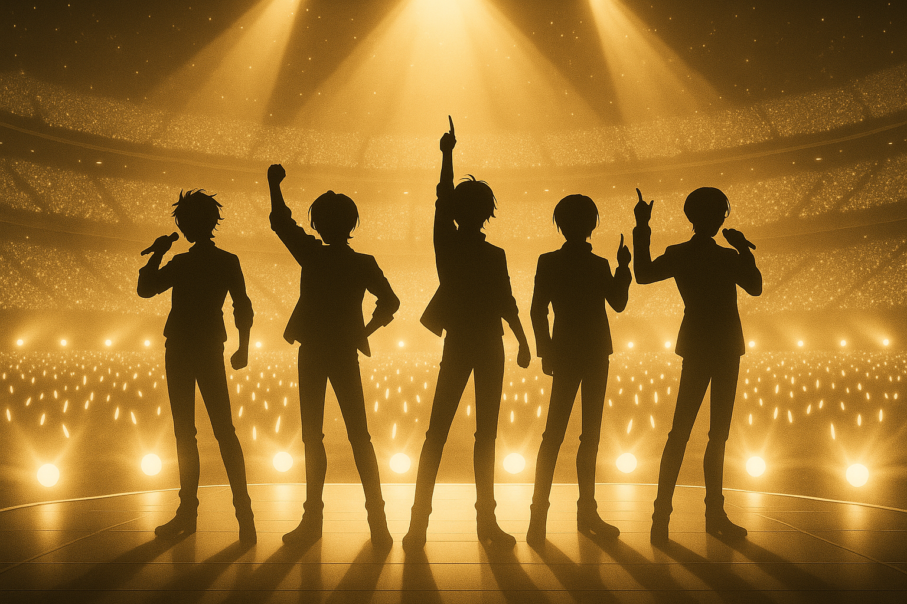

ゲーム概要
『Offstage Love（オフステージ・ラブ）』は、芸能界で生きる人々の“表と裏”を描いた、マルチエンディング型の恋愛シミュレーションゲームです。
華やかなステージの裏側にある“本当の気持ち”に触れながら、あなた自身の選択で物語が少しずつ変化していきます。
ストーリー紹介

あなたは、夢を追う新人シンガー。
ふとしたきっかけで出会ったのは、いま最も注目を集める男性アイドルグループ「CELEST（セレスト）」の5人。
偶然、必然、そしてすれ違い――
舞台裏で交錯する想いのなかで、あなたは“恋”と“夢”の間で揺れながら、自分だけの答えを見つけていくことになります。
ゲームシステム
本作では、プレイヤーが演じる主人公の名前を自由に設定することができます。
登場人物との関係性は、あなたの選択や行動によって少しずつ変化し、好感度やXP（経験値）の蓄積により、展開されるストーリーやエンディングも変わっていきます。
最終的にたどり着くエンディングは複数用意されており、感情の積み重ねによって「恋の結末」が決まる構造となっています。
楽曲システム
物語の進行に応じて、新しい楽曲が順次解放されていきます。
特定のシナリオを進めたり、好感度が一定に達したりすることで、キャラクターたちの楽曲やユニットソング、ソロ曲が聴けるようになります。
ゲーム内で集めた楽曲は、ストーリーの節目を彩るだけでなく、プレイヤーの記憶に残る体験として再生できます。
web2.8システム
本作では、いわゆる「web3」要素を軽量に取り入れた“web2.8”型のシステムを採用しています。
これは、ゲームの進行やエンディングには一切影響しない形で、ゲーム内アイテムや楽曲ジャケットなどのコレクションNFTを将来的にリリースする予定です。
NFTを利用しなくとも、ゲームプレイに不自由は一切ありませんので、ブロックチェーンに詳しくない方も安心してお楽しみいただけます。
※「web2.8」は、本プロジェクト独自の表現であり、一般的な金融・技術用語ではありません。
オフラブのココがヤバい！
📘 共通ルート × 恋の自然な積み重ね
最初から結末が決まってしまう人生なんて、つまらない。
『Offstage Love』は、序盤から誰かのルートに固定されることはありません。
言葉、態度、感情の積み重ねが、やがて恋になる——
「気づいたら、好きになっていた」 そんなリアルな恋を描きます。
🎭 主人公＝プレイヤーの没入体験
“彼女”の物語じゃない。これは、“あなた”の物語。
あらかじめ性格の決まった主人公はいません。名前も選択も、すべてプレイヤー次第。
感情がそのまま恋を動かす、世界にひとつだけの恋愛体験が待っています。
🖋️ 文学的で深い余韻のあるストーリー
スマホ乙女ゲーなのに、刺さる。
まるで小説を読むような静かな没入感。
セリフだけじゃない、登場人物の内面やモノローグが丁寧に描かれた物語構成で、
恋の余韻が心に残る、文学的なドラマをお届けします。